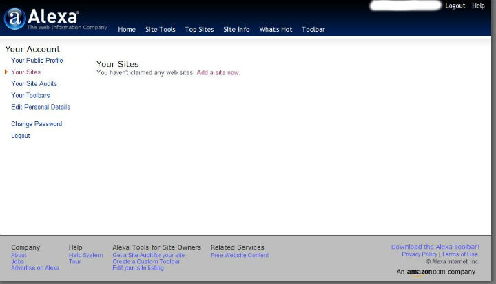

外企email常见英语缩写
说几个在外企工作跟老外email或者聊天工具中常用的英语缩写：
AFAIK：as far as I know
APP： application
ASAP： As soon as possible
ATB：all the best
BTW： by the way
Biz： business
B4：before
CC：carbon copy(抄送)
CUZ： because
FAQ：frequently asked questions
FE： for example
FTF： face to face
FYI： for your information
F2T：free to ...
Backtrack一些基本配置
查看网络配置信息
root@bt:/# ifconfig -a
手动激活未使用的网卡eth0
root@bt:/# ifconfig eth0 up
通过DHCP自动为eth0网卡分配ip地址
root@bt:/# dhclient eth0
也可手动为eth0网卡分配ip
root@bt:/# ifconfig eth0 192.168.1.105 netmask 255.255.255.0
添加网关
root@bt:/# route add default gw 192.168.1.1
查看dns配置信息:
root@bt:/# cat /etc/resolv.conf
编辑dns配置信息:
root ...
more ...ISPF中通配符%和*的使用
在日常的操作过程中，发现通配符__%和__使用的场合还是很多的，而且重要的是，如果使用好的话，真的是会很大程度上提高工作效率的。
和其他系统的通配符没什么区别，在大机上也是这么定义的：
_%：任意一位字符
*__：任意一至多位字符
下面举两个例子：
输入：IBMUSER.TEST.LIB%

输入：IBMUSER.*.LIB

当然，两者可以根据你的需要任意组合使用，这个是没问题的。就像：IBMUSER.*.LIB%这样。
OLTP和CICS
OLTP:联机事务处理
事务的ACID属性：
- 原子性(Atomicity)
- 一致性(Consistency)
- 孤立性(Isolation)
- 持久性(Durability)
关于OLTP的完整性和可恢复机制,这里举两种情况:
a)、 某人从ATM取200块钱，ATM向银行的主机递交请求(主机存储着客户的账户信息)，主机批准且从该人账户上扣去200元，此时ATM发生故障不工作了，此人没拿到钱。
b)、 某人从ATM取200块钱，ATM向主机递交请求，主机批准并且从客户帐上减去200元，ATM付200元给此人，此时主机保存取款记录的磁盘坏了，取款信息丢失。
此类问题层出不穷，增加了程序员代码逻辑处理的难度。我们需要一个环境，它能自动处理事务处理中所有可能的失败，使应用开发人员可以集中于商务的应用开发，而不必编写失败处理程序，不必关心通信和硬件等引起的问题。再来看一个问题：
c)、 航班订票，如果有两个客户在先后时间都要预定某一航班的同一座位，如何避免同一座位被售两次？ 通过锁住记录的方法，使得第二个请求必须等待第一个请求完成，而此时，该座位已经变成已预订状态，自然不会被再次预定。 各大公司相应地采用事务管理器，如IBM公司的CICS和IMS,EBA Systems的TUXEDO，DEC的ACMS，Transara的Encina灯来实现这些功能 ...
Backtrack5安装Adobe reader看PDF
Linux下的办公软件Openoffice和Libreoffice都很不错，小巧的foxit reader也很好，不过我还是习惯用adobe reader，所以还是决定在bt5下安装adobe reader。
1、下载压缩包到/tmp
root@bt:~# cd /tmp
root@bt:/tmp# wget -c http://221.1.222.15:82/down/AdbeRdr9.4.2-1_i486linux_enu.tar.bz2
2、下载好之后解压:
root@bt:/tmp# tar jxvf AdbeRdr9.4.2-1_i486linux_enu.tar.bz2
tar: Record size = 8 blocks
AdobeReader/
AdobeReader ...QW命令——MVS/QuickRef帮助文档
大机平台上有一个很了不起的帮助文档系统，名字叫做MVS/QuickRef，是一款强大的在线查询系统。用过微软的MSDN的童鞋都知道MSDN的强大。大机上面的MVS/QuickRef几乎可以查到所有你想查的资料，因为这款查询工具号称超过5k万行，以简单易懂著称。最主要的是查询特别方便，使用ISPF直接调用命令QW即可查询内容。
MVS/QuickRef现在最新的版本是2011年4月份新出的MVS/QuickRef 7.4 ，我们公司还在用的是7.0的版本。这款强大的查询工具是由一家名叫Chicago-Soft的公司生产的，主页在:MVS/QuickRef主页，可以去看看。
在大机上，MVS/QuickRef能查询许多方面的。这是官网上关于MVS/QuickRef强大的一段文字描述：
more ..."MVS/QuickRef's simple, easy to understand information helps you resolve 97% of the problems affecting z/OS, CICS, DB/2, IDMS ...
如何用键盘按出人民币符号
偶然发现的，写在这记一下：
如果你现在按下键盘 Shift+数字键4出来的是美元"$"符号的话，
你可以先按一次Shift,再接着按Shift+数字键4,出来的就是人民币"￥"的符号了。
要变回美元"$"的符号的话同理，先按一次Shift，再接着按Shift+数字键4,出来的就是人民币"$"的符号了。
如何提交网站到Alexa
大家都知道网站的Alexa全球排名是一项权威的数据，那么如何将自己的网站信息提交到Alexa呢？
1、登陆Alexa主页http://www.alexa.com/点击右上角的Register注册一个自己的账号。
2、注册好之后登陆，点击Your Site(你的站点)，提示你没有申明过任何站点。这时点击“Add a site now”来添加你的站点。

3、在输入框中输入你的站点名称，比如我的就输入：http://flyuphigh.com然后点击"Claim your site"来声明你的站点。

4、Alexa需要验证你对输入的站点确实有所有权，不然你随便瞎输网址了都可以了。右击“this file”,把此验证文件下载到本地，然后通过FTP传到你网站的根目录下。比如我的话上传完之后就是flyuphigh.com/BTcj7U4QWU9rex4HiGWNv5rF7IY.htmlS,上传完点击看看有没有 ...
非常好的学英语的网站
在国内，我认为最好的学英语的方式就是看英语视频，今天来推荐几个我觉得很不错的网站！
1、爱布谷CCTV-NEWS
这个是中国网络电视CNTV，上面有丰富的节目资源，网址是爱布谷CNTV。需要学英语的话可以看CCTV-NEWS。不得不说这里面有很多不错的节目，比如海客谈(crossover)，China24和Asia Today，Culture Express，Biz Talk,还有很多不错的主持人，比如邹悦,季小军,杨锐,田薇，爱华，James Chau，芮成钢等等。从我去年底开始看到现在，我是感觉到这个网站在不断的提升档次的，感觉得到大家都很用心在做节目，是不错的学习英语的途径之一。
2、网易公开课
不得不说，网易公开课是我今年发现的少数好网站之一，网址是网易公开课。这个网站几乎手机了现在世界名校的主流课程，有哈佛，牛津，斯坦福，耶鲁等等，课程涵盖范围也是非常的广，包括计算机领域，伦理心理学领域，医学建筑学领域，法律领域，经济金融等等 ...
more ...Linux+ssh+chrome(chromium)+proxy switchy + gSTM翻墙
上一篇讲到的是windows下的利用ssh+chrome(chromium)+proxy switchy + Myentunnel翻墙，其实在linux下和windows下没什么区别，都是用ssh代理，只是利用的客户端软件不一样而已。windows下用Myentunnel，linux下我们一般用gSTM。
gSTM (Gnome SSH Tunnel Manager) 是一款图形化的 SSH 隧道端口重定向管理工具 点击这里下载后安装，设置和之前讲得Myentunnel差不多.也是必填的几个：SSH服务器地址,SSH用户名，SSH密码，SSH端口3022，本地端口7070。
Proxy switchy的设置请参照我的另一篇文章 <